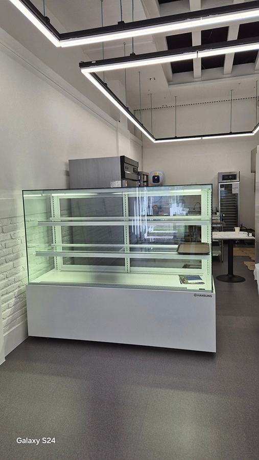
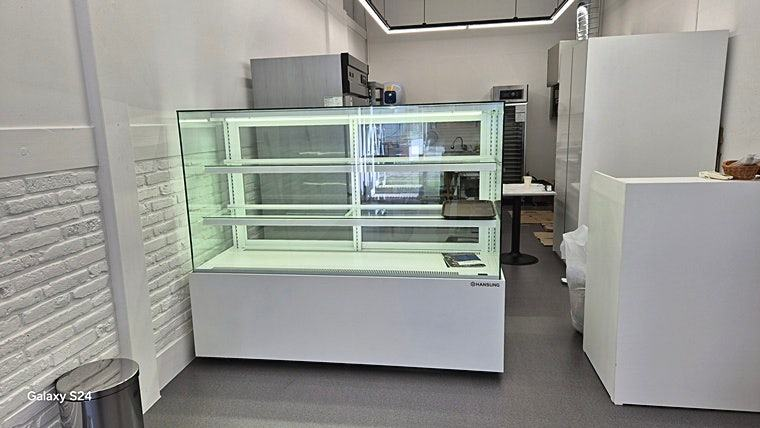
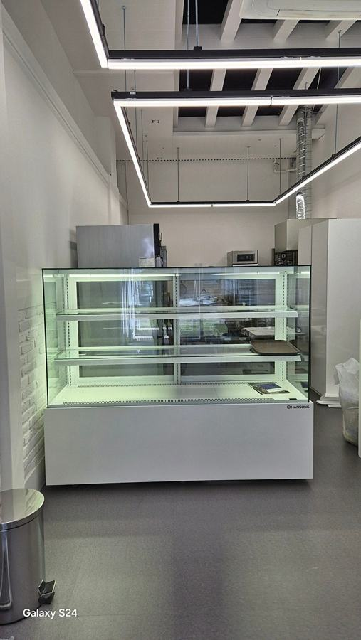
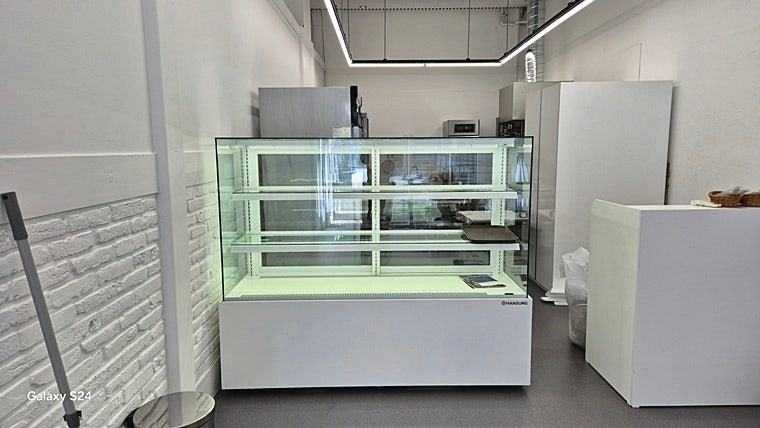
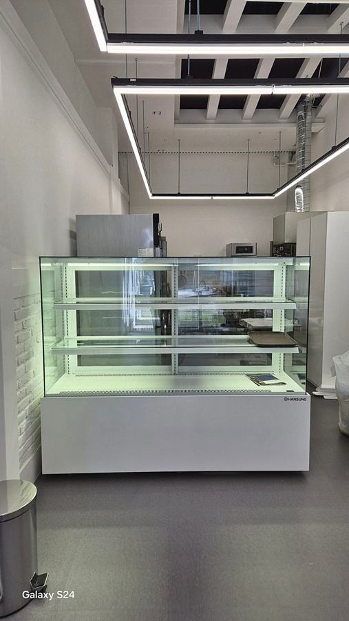
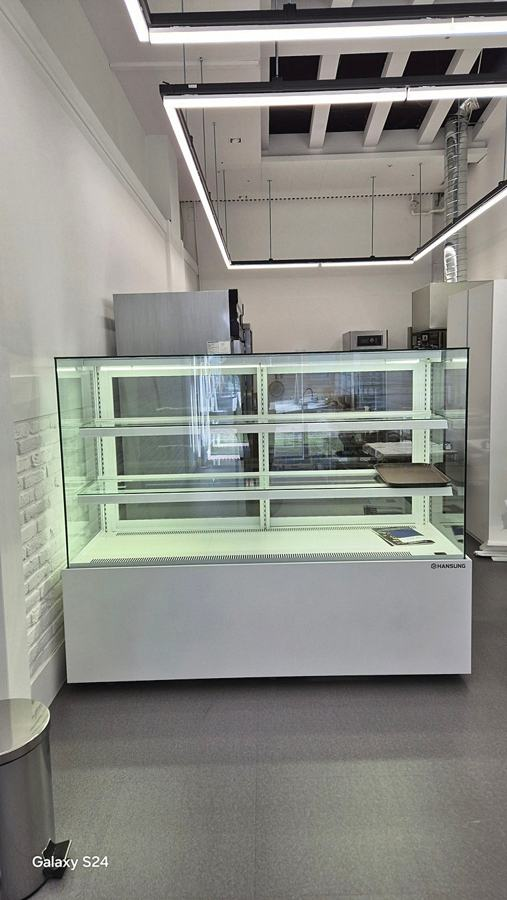
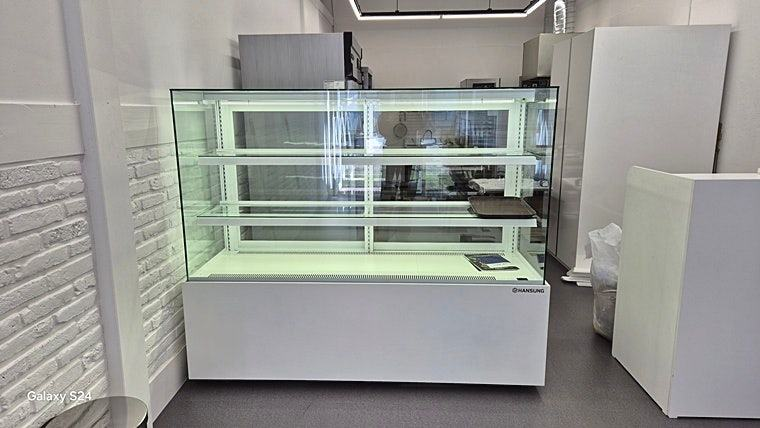
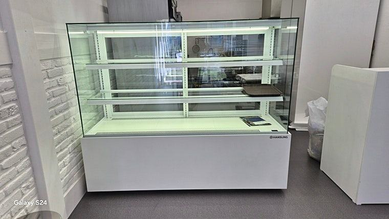

제과쇼케이스
베이커리 오픈 체크리스트, 제과쇼케이스 편

베이커리 오픈 전 제과쇼케이스는 품목별로 구역을 나눌 수 있는지, 직원 동선에 맞는 문 방향인지, 찬 바람이 디저트에 직접 닿지 않는 구조인지 세 가지를 먼저 확인하세요. 여기에 유리 사양과 마감재까지 정해 두면 오픈 뒤 진열을 바꾸느라 시간을 쓰는 일이 줄어듭니다.
안녕하세요. 베이커리와 디저트 매장의 진열 냉장고를 설계하는 한성쇼케이스입니다.
오픈 날짜가 잡히면 반죽 테스트, 메뉴 사진, 인테리어 마감까지 챙길 게 한꺼번에 몰립니다. 그러다 보니 제과쇼케이스는 "설치만 되면 되겠지" 하고 뒤로 미뤄 두시는 경우가 많습니다.
그런데 막상 오픈 첫 주에 빵과 케이크를 채워 보면, 품목이 뒤섞여 정신없어 보이거나 직원이 손님 쪽으로 돌아 나와야 꺼낼 수 있는 구조라는 걸 알게 되곤 합니다.
설치 뒤에는 바꾸기 어려운 부분들이죠.
오늘은 베이커리 오픈 전에 제과쇼케이스와 관련해 꼭 짚어 볼 항목을 체크리스트 순서대로 정리해 드리겠습니다.
1. 품목별로 구역을 나눌 수 있는지
식빵과 바게트, 홀케이크, 조각케이크, 타르트, 디저트컵, 병음료를 한 진열대에 섞어 두면 아무리 잘 만든 제품도 시선이 흩어집니다.
백화점 디저트관이 정돈돼 보이는 건 진열대 자체가 품목별로 나뉘어 있기 때문입니다.
옆으로는 품목별로, 위아래로는 층별로 나눌 수 있는 다단 구조라면 좁은 매장에서도 진열 면적을 넉넉하게 쓸 수 있습니다.
오픈 메뉴판을 펼쳐 놓고 어떤 품목이 몇 칸을 차지할지 미리 배치해 보세요.
- 오픈 메뉴를 품목군별로 나눠 적어 보세요.
- 냉장이 필요한 품목과 상온 품목을 구분하세요.
- 홀케이크 높이를 재서 단 간격을 정하세요.
2. 문 방향이 직원 동선과 맞는지
제과쇼케이스는 카운터 안쪽에서 꺼내고 채우는 뒷문형이 기본입니다. 손님이 보는 앞면은 깔끔하게 두고 직원은 뒤에서 제품을 보충할 수 있어, 회전이 빠른 매장에 잘 맞습니다.
손님이 직접 집어 가는 셀프 구역이 있다면 앞문형을, 양쪽에서 모두 접근해야 하는 아일랜드 배치라면 양문형을 고려해 보세요.
오븐에서 나온 빵이 어느 방향으로 들어오는지 동선을 그려 보면 답이 쉽게 나옵니다.
아침 첫 진열 시간을 떠올려 보시면 더 분명해집니다. 갓 구운 빵을 담은 철판을 들고 카운터를 돌아 나와야 하는 구조라면 바쁜 시간마다 손님과 부딪히게 됩니다.
문이 열리는 각도와 뒤쪽 작업 공간의 폭까지 도면에 표시해 두세요.


3. 유리와 냉기 흐름
전면·후면·측면에 이중 페어글라스가 들어갔는지 확인해 보세요. 유리가 이중이면 냉기가 밖으로 덜 새고, 겉에 김이 덜 서려 케이크 장식까지 선명하게 보입니다.
냉각 방식도 중요합니다. 크림이나 무스처럼 바람에 예민한 디저트는 찬 바람을 직접 맞으면 표면이 마르거나 굳어 버립니다.
냉기를 순환시켜 고르게 전달하는 대류 냉각과 간접 냉각 구조인지, 나중에 품목이 늘어날 때를 대비해 콤프 업그레이드 옵션이 있는지도 함께 물어보세요.
4. 마감재와 청소 동선
베이스와 프레임 마감은 매장 인테리어와 함께 정하시는 게 좋습니다. 같은 쇼케이스라도 마감에 따라 가구처럼 보이기도 하고 장비처럼 보이기도 합니다.
손이 자주 닿는 자리라면 손자국이나 얼룩이 덜 도드라지는 마감을 고르세요. 영업이 끝난 뒤 유리 선반을 빼서 닦기 쉬운지도 확인해 두면 매일 마감 시간이 줄어듭니다.
- 프레임 색과 두께를 인테리어 시안과 비교해 보세요.
- 유리 선반이 탈부착되는지 확인하세요.
체크리스트
- 오픈 메뉴 품목군별 구역 배치
- 뒷문형·앞문형·양문형 중 동선에 맞는 문
- 4면 이중 페어글라스 여부
- 대류·간접 냉각 구조와 콤프 업그레이드 옵션
- 마감재 색상과 얼룩 관리
- 선반 탈부착과 마감 청소 방법
현장에서 자주 보는 경우: 크림빵과 케이크를 한 진열대에 두는 매장
크림빵과 케이크를 함께 파는 베이커리에서 상담 요청을 주신 적이 있습니다. 기존 진열대에서는 찬 바람이 제품에 바로 닿아 크림 표면이 마르거나, 구석 칸은 덜 차가워 컨디션이 들쭉날쭉하다는 고민이었습니다.
그래서 냉기를 순환시켜 진열 공간 구석까지 고르게 전달하는 대류 냉각 방식으로 진열대를 구성해 드렸습니다.
찬 바람이 디저트에 직접 닿는 일이 줄어든 뒤로 제품 상태가 훨씬 안정적으로 유지된다는 이야기를 전해 주셨습니다.










| 구분 | 일반적인 냉각 방식 | 대류냉각+간접냉각 방식 |
|---|---|---|
| 냉기 전달 | 찬바람이 제품에 직접 닿는 편 | 냉기를 순환시켜 고르게 전달 |
| 디저트표면 상태 | 건조하거나 얼기 쉬움 | 안정적으로 유지되는 편 |
| 콤프 업그레이드 | 대응 어려운 경우 많음 | 옵션으로 대응 가능 |
자주 묻는 질문
제과쇼케이스는 오픈 얼마 전에 주문해야 하나요?
맞춤 제작은 설계와 제작 기간이 필요해 인테리어 일정과 함께 잡으시는 게 좋습니다. 설치 자리 마감이 끝나기 전에 치수를 확정해 두면 일정이 꼬이지 않습니다.
빵과 케이크를 한 대에 같이 넣어도 되나요?
넣을 수는 있지만 품목별로 구역을 나누고, 크림류는 바람이 직접 닿지 않는 자리에 두셔야 합니다. 상온 빵은 냉장 구역과 분리하는 편이 진열도 깔끔합니다.
뒷문형과 양문형 중 무엇을 고르면 될까요?
카운터 안쪽에서만 꺼낸다면 뒷문형이 기본입니다. 쇼케이스를 매장 가운데 두고 양쪽에서 쓰신다면 양문형이 맞을 수 있으니 배치도를 보며 상의해 보세요.
매장 조건에 맞춰 만드는 한성쇼케이스
원하시는 제품 사진과 설치할 공간 사진만 보내 주셔도 매장에 맞는 구성을 추천해 드립니다.
- 전국 240여 개 A/S 전담 센터 운영
- 본사 대량 자재 매입으로 품질 대비 합리적인 가격
- 유럽제·삼성 냉각 콤프레셔 적용
- 국내 최초 쇼케이스 전문 디자이너 상주
매장 폭과 원하는 진열 구성을 알려 주세요. 실측과 견적을 안내해 드립니다.
031-986-2458